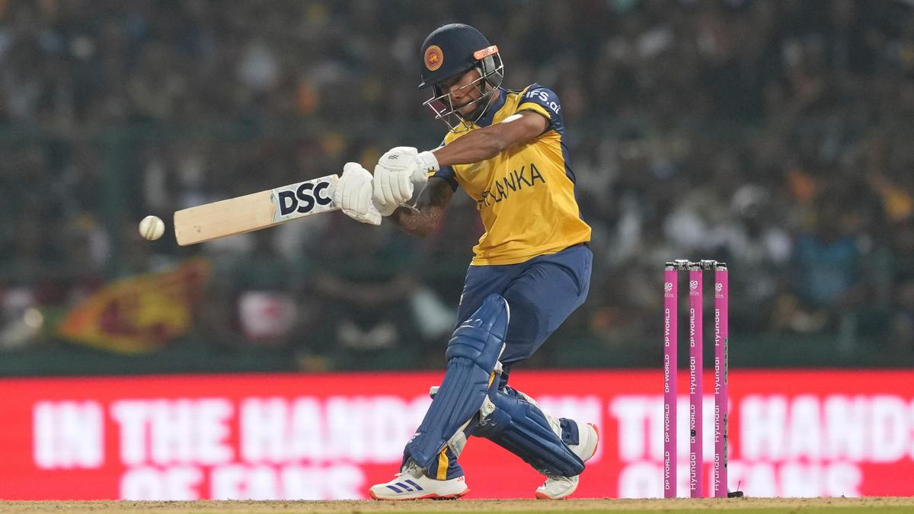

T20 World Cup: Ton-up Nissanka leaves Australia on the brink
he opener’s scintillating knock takes Lanka into the Super Eight with ease; Kusal Mendis hits a fifty; Hemantha’s three-for proves vital in bowling out the 2021 champion for 181 after its dream start

It is not often you see an Australian team walk around the field with drooping shoulders. The reaction was logical in view of what transpired at the Pallekele International Cricket Stadium in Pallekele, Sri Lanka, on Monday (February 16, 2026).
Back to Home